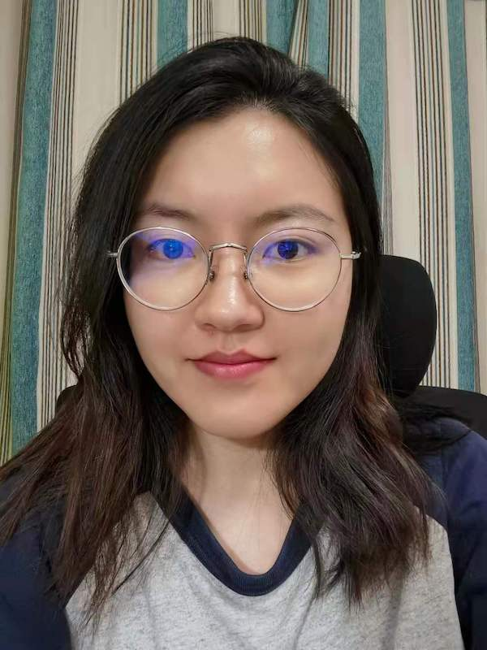
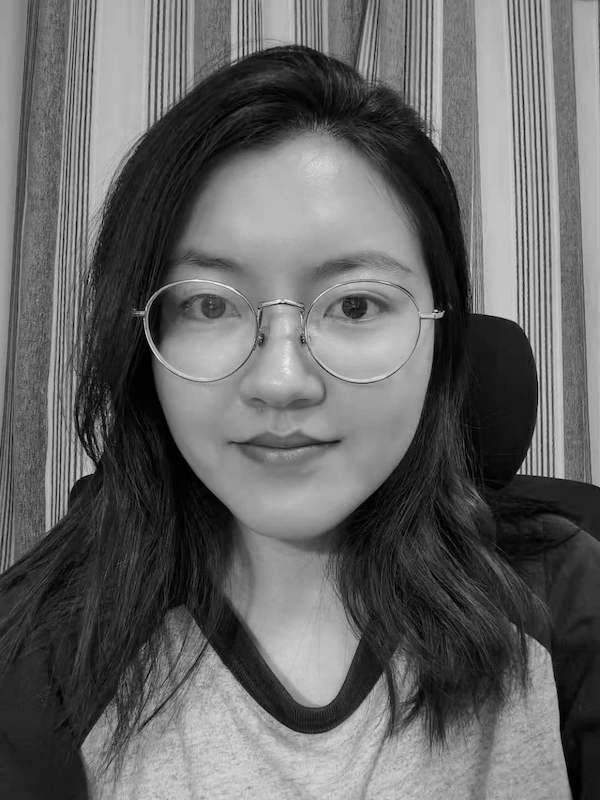
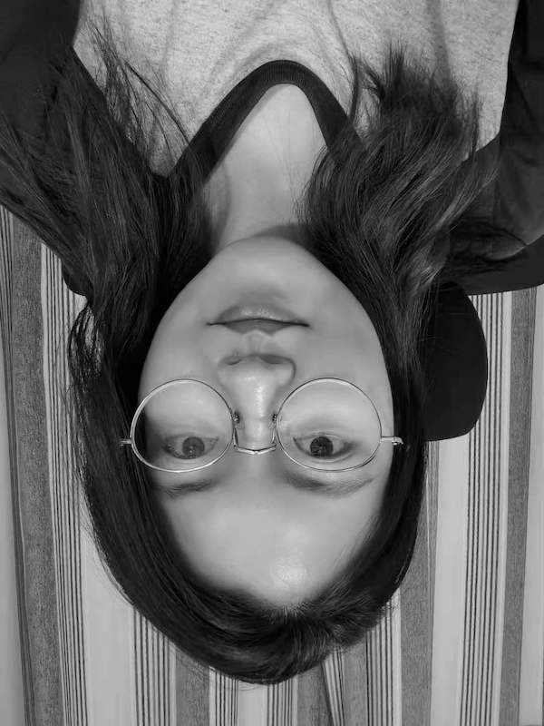
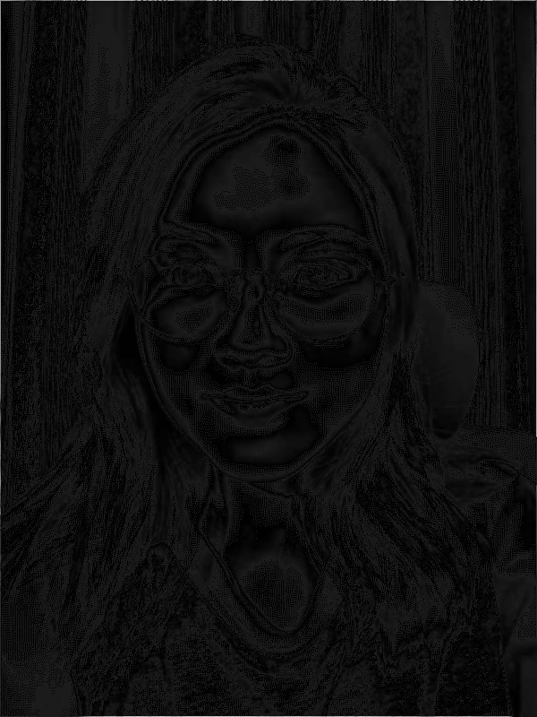

Problem Definition
1. Create a grayscale image of your face by converting your color image using one of the conversions we discussed in class last week. 2. Come up with another way of manipulating your face that produces an interesting output. For example, you may create a blurred image of your grayscale face by assigning to each pixel the average grayscale pixel value of itself and its 8 neighbors. Hint: You may have to run your program a few times to make the blurring noticeable.
Method and Implementation
1. Grayscale conversion using: 0.3*R + 0.6*G + 0.1*B method. Need to be careful of the color channels. When the image is read using cv2.imread(), the order of colors is BGR instead of RGB. 2. (a) I flip the image vertically by reversing the order of the rows and keeping remaining the same. (b) I used the suggested method to assign each pixel by the average value of itself and its 8 neighbors. This was done using a nested for-loop to search through the entire image. For example, I[i,j] needs to consider the following: I[i-1,j] + I[i+1,j] + I[i,j-1] + I[i,j+1] + I[i-1,j-1] + I[i+1,j+1] + I[i-1,j+1] + I[i+1,j-1]
Results
| Input Image | Grayscale | Flip Vertically | Blur | ||
|  |  |  |  | ||